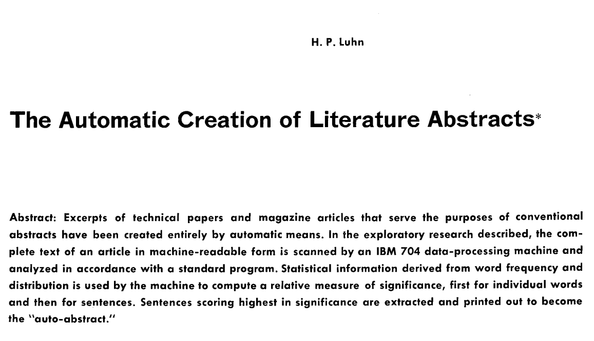
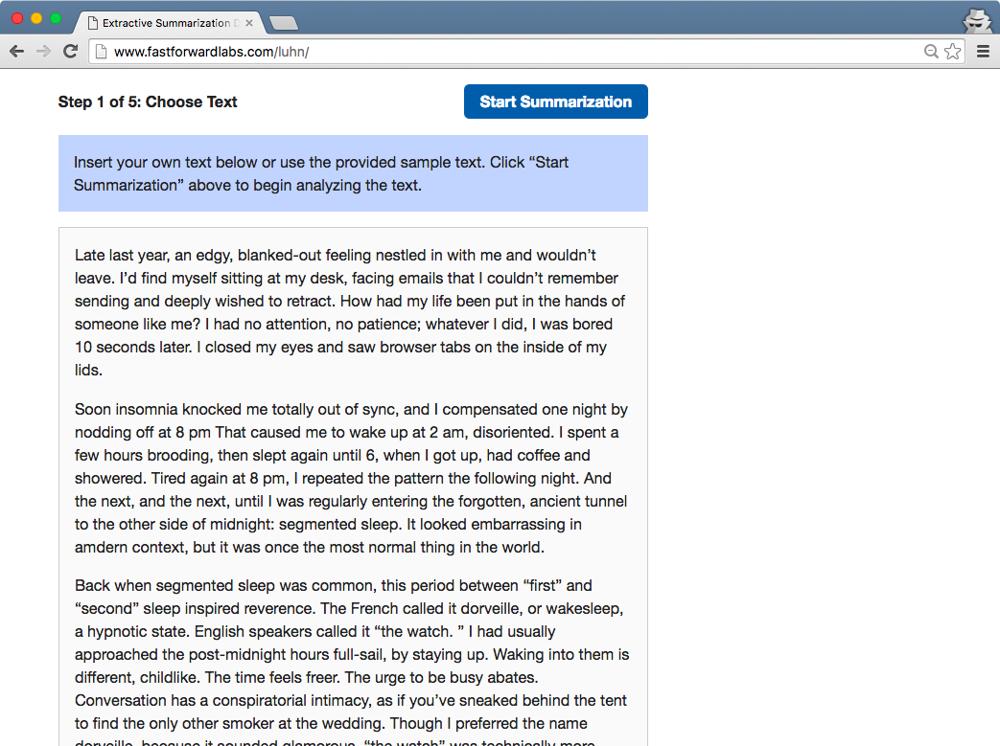
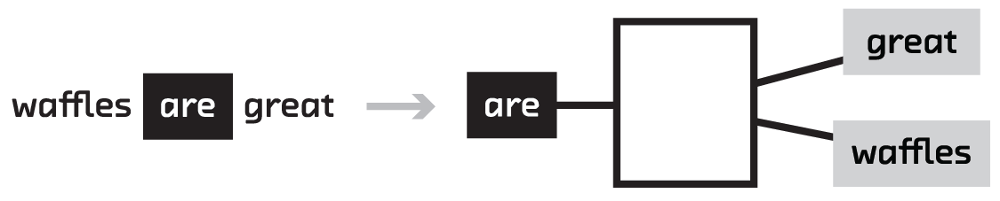
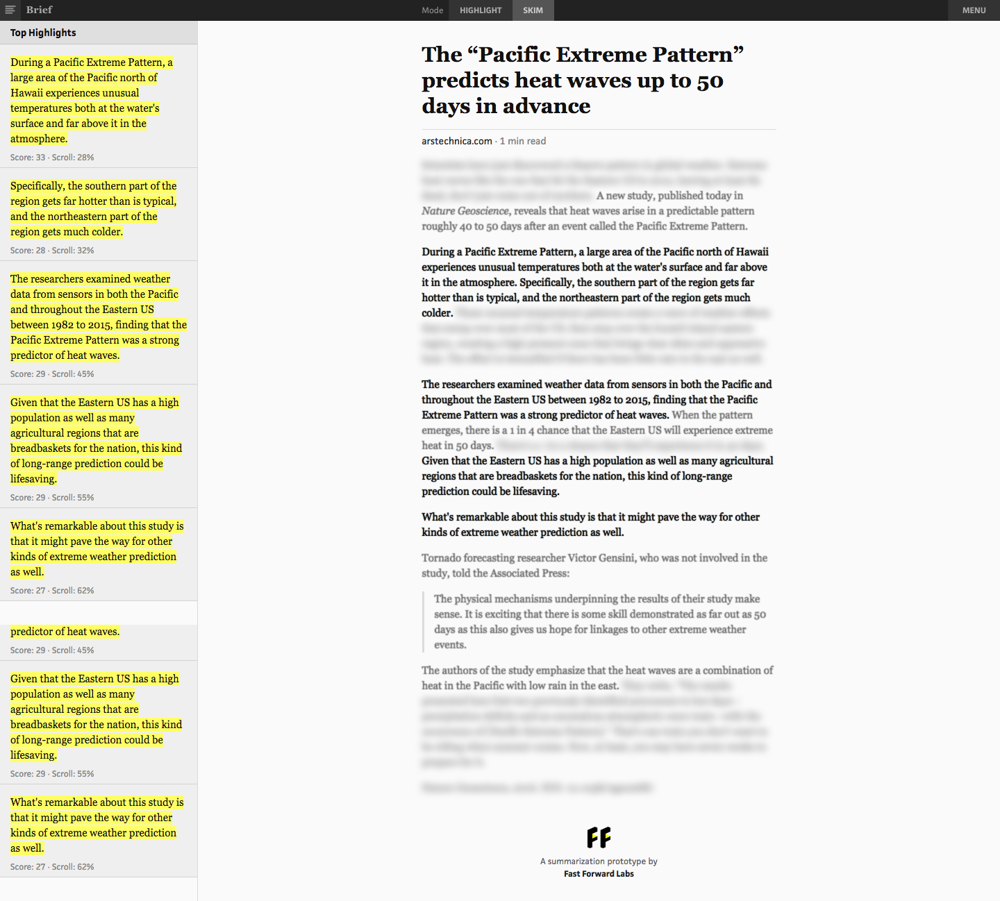
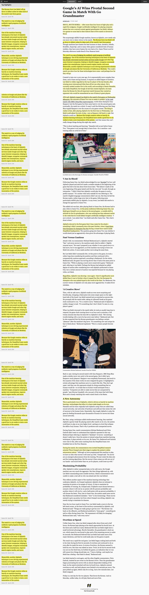

class: center, middle <img src="ff-logo-transparent-bg.png" width="30%"> # Summarizing documents #### Mike Williams • [@mikepqr](http://twitter.com/mikepqr) • [mike.place/talks/warbyparker](http://mike.place/talks/warbyparker/) #### [@fastforwardlabs](https://twitter.com/fastforwardlabs) • [fastforwardlabs.com](http://fastforwardlabs.com) ??? I'm going to explain an approach to summarizing documents. Summarization is intrinsically important task so hopefully you'll find it intrinsically useful. But step 1 of any good summarization algorithm is also step 1 of any other algorithm dealing with language. That's the bit where you vectorize text: turn it into numbers that a computer (or a machine learning algorithm) can cluster, rank or otherwise manipulate. so these ideas are important even if you don't have a need for summarization. This vectorization step is the foundation stone of pretty much all NLP problems. In that sense, summarization is the concrete context in which I'm going to introduce a couple of new ideas for extracting meaning from documents using neural networks. --- class: center, middle, full-bleed, ff04 ??? Why am I talking about this topic? I work at Fast Forward Labs. We do applied research on statistics, machine learning, data science, etc. Our customers subscribe, and they get four books like this per year, and four hours consulting on retainer each month. I'm going to talk about our most recent report, on summarization. For our reports we build working prototypes to demo the algorithms. So really what I'm going to talk about is a prototype. I'll explain the algorithms behind it conceptually. There's going to be some further reading at the end, which covers some of the technical details (and has a link to a much longer and more in depth version of this talk). But if you have questions please interrupt. --- class: center, middle <img src="overview_extracted.png" width="50%"> ??? But first let's define the problem. We want to _extract_ salient excerpts from a document. This is extractive summarization is an incredibly important task, now more than ever. (There's also _abstractive_ summarization, which is a much tougher problem that we're not going to get into today.) --- class: center, full-bleed <img src="hpluhn.jpg" width="100%"> ??? I'm going to focus on neural networks today, but to set that up I want to demo a couple of simpler approaches. The first is stupid simple. This is Hans Peter Luhn. He worked at IBM from 1941 until his death in 1968. --- class: center, middle, full-bleed  ??? We're interested in him because he wrote this paper in 1958. You can find it online pretty easily. It's a seminal paper, and worth reading. But the easiest way to explain the algorithm is to show you a demo. [http://www.fastforwardlabs.com/luhn/](http://www.fastforwardlabs.com/luhn/) --- class: center, full-bleed  --- class: center, full-bleed <img src="luhn2.png" width="80%"> --- class: center, full-bleed <img src="luhn3.png" width="80%"> --- class: center, full-bleed --- class: center, full-bleed ??? Luhn's method is very simple. And it actually works OK in jargon-heavy documents. You could improve the scoring of sentences with other heuristics, like "does this sentence appear early in the document?" Or does it include the words "In summary"?! But these approaches are tough. Not only do they need the engineer to understand the language the documents are written in. But they also need to understand the meaning of the documents in order to invent heuristics and assess the quality of the summaries they produce. And any heuristics you come up with will inevitably be fragile and domain specific. But there's a more fundamental problem with Luhn's algorithm, which is that the vectorization step allows it to look only for common words. Not common _topics_. If you mention movies 100 times, it won't assign a high score to a sentence containing the word "film". Or the word "director" There's a natural solution to this problem: identify the _topics_ that dominate a group of documents. These topics are in some sense "salient". Then we'll construct a summary by finding sentences that are themselves dominated by these salient topics. --- class: center, middle, full-bleed ??? You can see the results here, applied to Amazon product reviews. There might be 5000 reviews of a popular book. Together these are longer than the book itself, so that's too much information to take in. But the single number (3.8/5 or whatever) is too little. We'd like a richer summary. To do this I've replace Luhn's idea of looking for sentences containing common _words_ with a semantically richer idea: sentences containing common _topics_. I did this using Latent Dirichlet Allocation. I'm going to skip over the details entirely. Ask me or see the links at the end if you're interested. For the visualization I've grouped extracted sentences into the topics they are dominated by. And I'm showing sentences for four of the topics that dominate the reviews. And this is the result. Not bad! This is actually a very effective and practical approach that I'm happy to talk more about. But I wanted to focus on neural networks, so I'm going to criticise it now, to motivate neural nets, and then move on. But that's not to say it's not a good approach! You can see here one of the limitations of this method: the topics don't come with names. But there are more fundamental problems with Luhn's method and this topic version: they ignore word order, and they necessarily throw away a ton of information by reducing a document to ~4 numbers (Luhn) or ~100 numbers (topic modelling). --- class: middle, center  <img style="vertical-align:middle" src="rnn-background_sequential.png" width="40%"> ??? So we've got two things we want to fix with our approaches so far: retain more of the meaning of a text when we turn it into numbers, and retain information about document structure. In the case of retaining more meaning the solution is language embeddings like word2vec. And in the case of using order, it's recurrent neural networks. Both of these came out of the deep learning community. --- class: center, middle ??? Let's look at language embeddings. We'll start with word2vec, which is a supervised machine learning problem. Given the input (a word), can you predict the words most likely to immediately precede and follow it? This seems like a pretty weird problem to care about, but the solution generates an extremely useful by-product. The particular algorithm used for this supervised machine learning problem is a neural network, so I need to quickly explain what they are. --- class: middle, center ??? This is a neural network. Although there are some interesting connections with neuroscience, just think of them as computational graphs. They're a series of operations performed on data that allow it to generate predictions. In this case we've got 10 input features. These are probably numbers like height, age, whatever. And we've got two outputs which are the thing we want to predict. Maybe it's whether someone with those attributes votes Democrat or Republican. In the middle is where the magic happens. All the inputs are reweighted and mulitplied together and rescaled in hidden layers. If you know linear regression, what's happening is not qualitatively different to that. Just like with linear regression, the difficult bit is figuring out what operations do the best job of making predictions. That's training. --- class: middle, center, full-bleed ??? But what does this have to do with skipgrams and word2vec. Here's a schematic version of the network used in word2vec. The input is an array of the same size as our vocabulary. In this sketch I've assumed that all our training documents use only these five words. But obviously normally this is going to be more like a few tens of thousands of inputs. The output layer is the same size and corresponds to the same vocabulary. During the training process, we're trying to learn which words are likely to precede and follow the input word. So we want the elements of the output to be large (close to 1) for words that are likely to precede or follow our input But there's an interesting byproduct to getting good at this prediction: the hidden layer. In word2vec those are much smaller than the input and output layers, around a few thousand. By construction, this hidden vector (or word embedding) is useful for predicting context. Given that it allows you to reconstruct (with errors) the phrase, you could could say it's a kind of lossily compressed form of the input. And it's this vector that was the whole point of word2vec: by ripping the values of these hidden layers for a given input out of the network, we now have vectors we can do other things with rather than just predict context. --- class: center, middle <img src="rnn-background_word2vec.png" width="100%"> ??? Here's an example of the ways in which these vectors are useful. Imagine the hidden layer was two numbers. Then I can plot it on a plane. Words that have hidden vectors close to each other turn out to be semantically related, and the directions and distances between word vectors turn out to be semantically significant too. The way you get from "China" to "Beijing" is the same way you get from "Germany" to "Berlin". We set out to predict the context of words, but we've produced word vectors that can be used to solve analogies. This is all kind of vague, but it turns out that coordinates with these properties are essentially encoding the _meaning_ of words into numbers. And numbers are things computers (or machine learning algorithms) can work with. This is a huge deal! --- class: center, middle <img src="rnn-background_skipthoughts.png" width="90%"> ??? And you don't have to stop at words. You can play the same game with sentences, predicting the sentences that come before and after. This, however, requires a lot more data. So rather than train it yourself, most people use an off-the-shelf model. We like skipthoughts. You can get it from github. It comes with the python code (and pickled numpy array) necessary to take in text, and spit our 4800 numbers that are a lossily compressed embedding of that text. You can use these as input for any machine learning task. --- class: center, middle <img src="rnn-background_sequential.png" width="40%"> ??? So that's retaining word meaning. What about order? Arguments are built up. Hypotheticals explored. The first and last sentences carry special significance. All this, which helps a human write a summary, is thrown away if you don't retain order. Traditional machine learning struggles here because of a simple almost mundane reason: documents (i.e. the input) are of different lengths. Bag of words and topic modelling are ways around this, but they all throw away order information to squeeze every document into the same size vector. But a couple of years ago, researchers figured out how to chain together neural networks (and crucially, how to train these chains). This allows input or output of arbitrary size to be fed in or out as a sequence with order. These are recurrent neural networks. --- class: middle 1. Find article—summary pairs that use excerpts (thebrowser.com) 2. Score each sentence in the articles on its similarity to the quotes that make up the summary 3. Use skip-thoughts to encode every sentence in the article 4. Train an RNN to predict the scores given the skip-thoughts vector of a sentence 5. Evaluate trained model on new things and use high-scoring sentences as the summary --- class: middle ```python from keras.models import Model from keras.layers.recurrent import LSTM from keras.layers.core import TimeDistributedDense from skipthoughts import skipthoughts (articles, scores), (articles_test, scores_test) = function_that_loads_all_the_training_data() articles_vectors = skipthoughts.encode(articles) articles_vectors_test = skipthoughts.encode(articles_test) model = Model() model.add(LSTM(512, input_shape=(max_sentences, 4800), dropout_W=0.3, dropout_U=0.3)) model.add(TimeDistributedDense(1)) model.compile(loss='mean_absolute_error', optimizer='rmsprop') model.fit(articles_vectors, scores, validation_split=0.10) loss, acc = model.evaluate(articles_vectors_test, scores_test) print('Test loss / test accuracy = {} / {}'.format(loss, acc))` ``` ??? This is pretty much the code we used. Note that skip-thoughts is pre-trained. Text in, vector out. If you do machine learning with text, you can go home and try this right now. Instead of using bag of words as the input to your model, try skip-thoughts. Let me know if it works! This code uses the open source library Keras to build the network. On the backend the linear algebra and automatic differentiation operations are done by Theano or Tensorflow, but using Keras makes building the network much easier. I'm not going to explain every line, but you can see its a very small amount of code. 4800 refers to the size of the skip-thoughts vector for each sentence. Dropout is an approach to regularization, which is a serious risk in neural networks. --- class: center, full-bleed <img src="arstechnica.png" width="100%"> ??? And having trained the model we can no predict sentence scores, which means we can construct a summary. Here's the prototype we built, Brief, which is a browser extension. --- class: center, full-bleed  ??? It also has skim mode. --- class: center, full-bleed  ??? And here it is on a more substantial article. There are more examples at [http://www.fastforwardlabs.com/brief/](http://www.fastforwardlabs.com/brief/) and the prototype is available to our clients. The language embedding/RNN approach is, for now, the gold standard of extractive summarization. You need model summaries and computational resources. Training on our 18,000 article set took around 6 hours on a GPU. Despite this, this is the approach we're most excited about. --- class: center, middle <img src="rnn-background_legos.png" style="width:80%"> ??? That's because it's an approach that can be used any time a computer needs to work with the _meaning_ of language. By retaining meaning and order, recurrent networks are being used to make breakthroughs in language tasks like translation, simplification, caption creation, search and speech recognition every day. And the good news is, while neural networks have a tough reputation, the libraries are starting to reach the point where non-specialist engineers can work with them, and connect together (compose) neural networks like lego, for all kinds of input and output. We're really excited about this stuff! --- ### Further reading Broader version of this talk - [mike.place/talks/pygotham](mike.place/talks/pygotham) (hit `p` to get my notes) Topic modelling - Tim Hopper's talk at PyData NYC 2015 [github.com/tdhopper/pydata-nyc-2015](github.com/tdhopper/pydata-nyc-2015) and [youtu.be/_R66X_udxZQ](https://youtu.be/_R66X_udxZQ) - *Probabilistic Topic Models* by David Blei [www.cs.princeton.edu/~blei/papers/Blei2012.pdf](https://www.cs.princeton.edu/~blei/papers/Blei2012.pdf) Neural Networks - *Deep Learning* by LeCun et al. [go.nature.com/7cjbaa](http://go.nature.com/7cjbaa) - The relevant lectures from Andrew Ng's Coursera course - Chapters 1-3 of Michael Nielsen's textbook, [neuralnetworksanddeeplearning.com](http://neuralnetworksanddeeplearning.com/) - My introduction to Keras [mike.place/2016/keras-oriole/](http://mike.place/2016/keras-oriole/) - Chris Olah's articles, [colah.github.io](http://colah.github.io/) - *A Primer on Neural Network Models for Natural Language Processing* by Yoav Goldberg [u.cs.biu.ac.il/~yogo/nnlp.pdf](http://u.cs.biu.ac.il/~yogo/nnlp.pdf) --- class: center, middle <img src="ff-logo-transparent-bg.png" width="30%"> # Summarizing documents #### Mike Williams • [@mikepqr](http://twitter.com/mikepqr) • [mike.place/talks/warbyparker](http://mike.place/talks/warbyparker/) #### [@fastforwardlabs](https://twitter.com/fastforwardlabs) • [fastforwardlabs.com](http://fastforwardlabs.com)